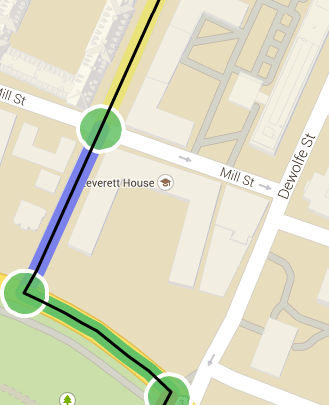
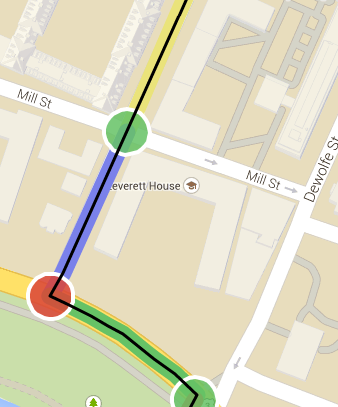
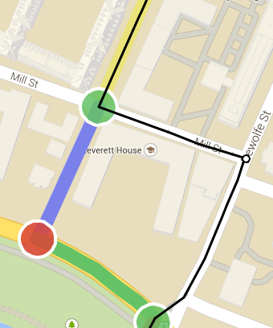

Drag the black line to select the most accessible route from A to B.
To help you select the most accessible route, we have color-coded sections of the map to indicate which intersections and sides of the street are accessible. This means that you can use the following color-matching rules to select an accessible route:
Where a color "matches with" another color if the two are allowed to be side-by-side in an accessible route. Here are some examples:
|  | This is a good route. Note that, from top to bottom, the yellow matches with green, the green matches with blue, the blue matches with green, and the green matches with green. |
|  | This is a bad route. This route is inaccessible because the red on the bottom left does not match with any of its surrounding colors in the route. |
|  | To fix the bad route above, drag the black line away from this inaccessible section to a section where the colors do match. If no such accessible section exists, drag the black line over a section that has not been color-coded yet, like here. Note that a white circle appears where you let go of a dragged route, like here on the right corner. If you change your mind about the route, click and drag from the white circle. |
If more than one route is most accessible, pick the shortest one. When you are finished, hit "Done!" to record your new route. Thanks for your help!